Чахохбили из курицы
Ингридиенты:
- Куриные бёдра (1 упаковка)
- помидоры протертые пассата (500г)
- лук репчатый (4 шт.)
- петрушка (1 пучок)
- тархун (1 пучок)
- кинза свежая (1 пучок)
- базилик фиолетовый (1 пучок)
- тимьян свежий (2 веточки)
- чеснок (3 зубчика)
- соус сацебели (4 ст.л.)
- растительное масло (100 мл)
- кориандр семена (1 ч.л.)
- хмели-сунели (1 ч.л.)
- соль (по вкусу)
- перец (по вусу)
шаг 1/12
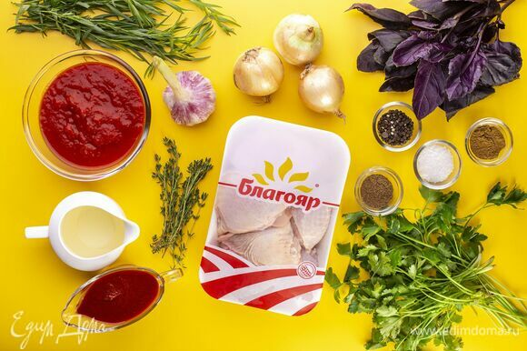
Эти ингредиенты понадобятся для приготовления.
шаг 2/12
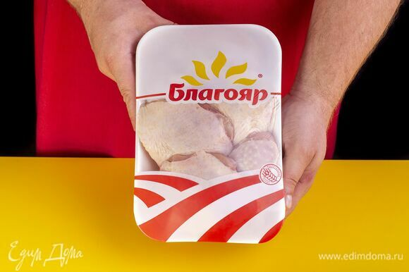
Подготовьте набор для чахохбили ТМ «Благояр»
шаг 3/12
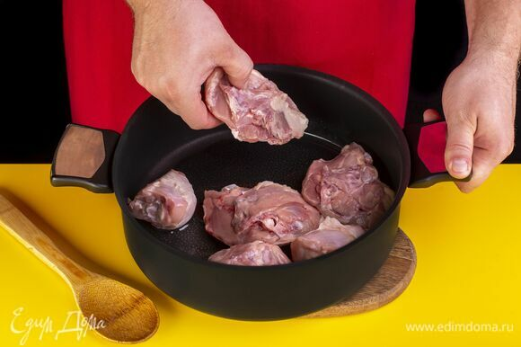
Разогрейте кастрюлю с толстым дном, выложите части цыпленка и тушите под крышкой без добавления масла 5 минут на медленном огне.
шаг 4/12
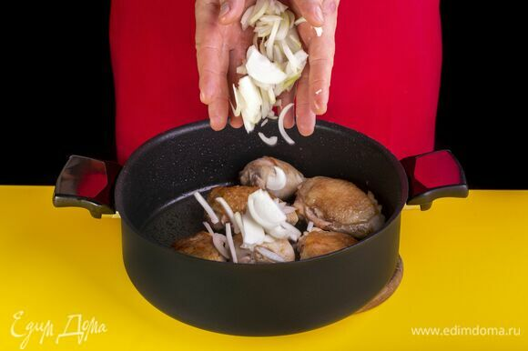
Лук нарежьте соломкой, выложите в кастрюлю, добавьте масло и продолжайте тушить, пока лук не станет мягче.
шаг 5/12
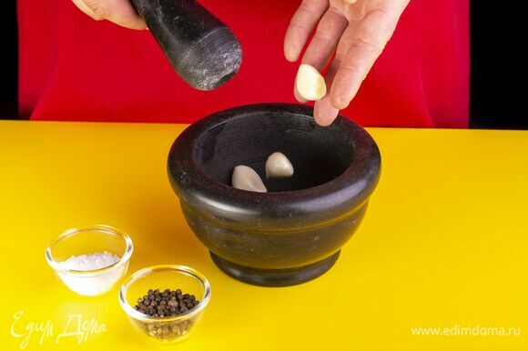
Чеснок почистите и разотрите в ступке со щепоткой соли и перца.
шаг 6/12
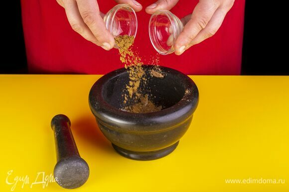
Добавьте кориандр и хмели-сунели. Все перетрите и перемешайте.
шаг 7/12
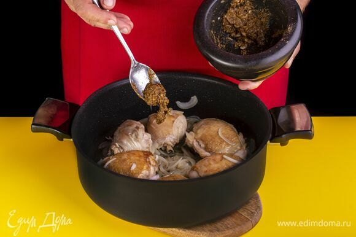
Добавьте пряности.
шаг 8/12
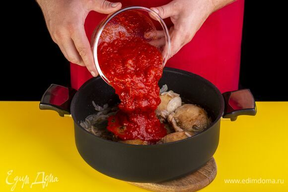
Добавьте протертые помидоры, тушите 10 минут на слабом огне.
шаг 9/12
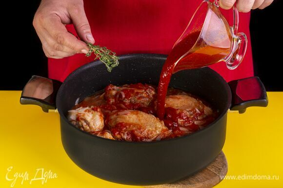
Добавьте соус сацебели и тимьян. Накройте крышкой и тушите на слабом огне около 30 минут.
шаг 10/12
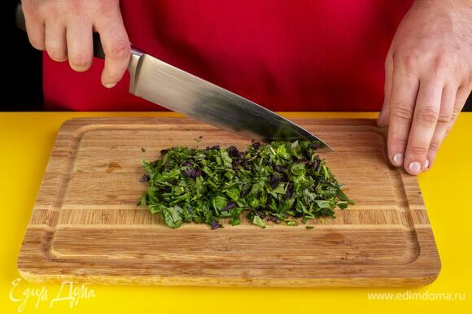
Порубите петрушку, тархун, кинзу и базилик.
шаг 11/12
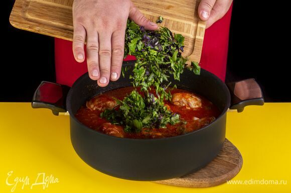
Добавьте зелень в кастрюлю и тушите еще 5–10 мин.
шаг 12/12
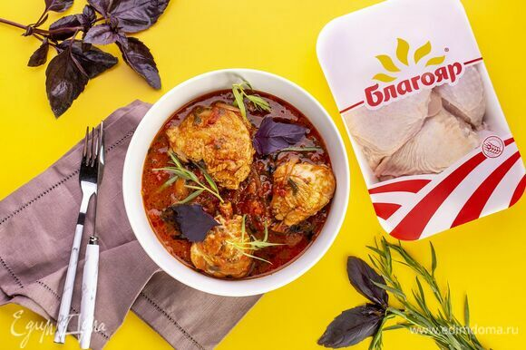
Приятного аппетита!
Источник
Copyright © Kirill Delija & Stanislav Nerman